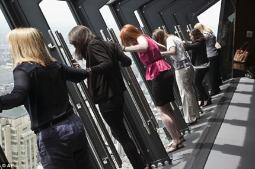

10 April 2014
George Lucas eyes Chicago for art, Star Wars museum
Billionaire "Star Wars" creator George Lucas, who wants to establish a major museum to house his significant art and movie memorabilia collection, is considering Chicago as the location after plans for his $300 million Lucas Cultural Arts Museum stalled in San Francisco. The city will submit a proposal to Lucas in the coming months, said David Spielfogel, a senior adviser to Emanuel.
11 May 2014
Vertigo-inducing 1000ft viewing platform in Chicago opens to tourists
Brave tourists have been trying out Chicago's newest attraction - a 1000ft-high viewing platform that offers spectacular downward facing views over the city.TILT is housed in 360 CHICAGO on the 94th floor of the John Hancock Tower. The attraction, which costs $5 to tourists and is thought to be the first of its kind, holds up to eight people, with the platform slowly moving outward to an adventurous angle above the Windy City.
1 May 2014

Five of Illinois’ top 10 high schools are Chicago Public Schools
According to a U.S. News & World Report ranking on the nation’s top 10 high schools, five Chicago Public High Schools have claimed spots on the state’s top 10 list. The five Chicago Schools are: Northside College Preparatory High School (No. 36), Walter Payton College Preparatory High School (No. 49), Jones College Prep (No. 91), Whitney M. Young Magnet High School (No. 120) and Lane Technical High School (No. 258)
26 July 2012
Motorola Mobility leaving Libertyville for downtown Chicago
Smartphone-maker Motorola Mobility is moving its headquarters from Libertyville to the Merchandise Mart in summer 2013. The relocation will bring 3,000 employees to downtown Chicago, the company and Mayor Rahm Emanuel announced Thursday. Motorola Mobility, which was acquired by Google Inc. for $12.9 billion in May, will invest $300 million in the move.
11 Nov 2012
Chicago Food Planet Tours Featured on ABC7's Hungry Hound
According to Hungry Hound Steve Dolinsky from ABC7 News: "Chicago Food Planet Tours do much more than just take guests into restaurants. They talk about local history and culture as well. Chicago is full of tour operators. But the Chicago Food Planet operates a little bit differently. Because when you decide to go on one of their three-hour tours, you'll not only be fed, but educated as well."
15 May 2014
Northwestern, Cadence reach merger deal
Northwestern Memorial HealthCare and Cadence Health said Thursday they have reached a deal to combine into a single health system that would rank among the largest in the Chicago area. Each system’s board of directors formally gave approval to the deal, announced initially in March, leaving only state and federal regulatory approval pending. The combined system would have four hospitals, more than 1,300 employed physicians and combined annual revenue approaching $3 billion.